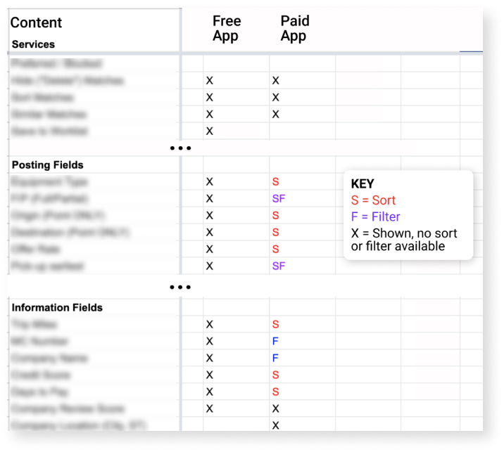

Search & Table Design
Note: This project has been sanitized with images blurred to protect company IP.
Problem
Ranging from desk-jockey to on-the-go, our users needed to search for, and quickly pick through a list of continually changing results on an online marketplace.
The existing search and results page was clunky, lacking a clear hierarchy and engineered without a scalable UI. Changes often required custom code, making it harder to test and maintain.
Solution
We designed a new way to search and distill results via a table (desktop) and card (mobile) layout that allowed users to choose what details they see in the search, filter, and sort with more accuracy. Collaborating with engineering, the solution focused on component reusability, accessibility, and interface customizability.
My Role
I lead heuristic analysis and created initial UI designs, working with my team to develop reusable components. I also worked with a UX researcher to challenge assumptions via observation.
Discovery
Requirements
What services we offer, what fields to show?
Engineering
Tired of getting things thrown over the proverbial “wall”, engineers wanted more detailed designs, with considerations for responsiveness and an idea of future changes to craft a more flexible UI.
We created Data architecture diagrams to communicate long-term product goals.
Customers
With the help of our UX Researcher and our support team, we looked through customer requests and listened to live calls to challenge the engineering assumptions baked into the existing design.
I also viewed youtube tutorials, where customers were teaching others about our product - conveniently pointing out things they were frustrated about or didn’t get about our interface.
I wanted to be sure we were solving the right user problems.
Product and Sales
The product team gave us a long list of services and fields that should be ported over from the existing application into free and paid versions of the new one.
User Journey
Aligning Requirements with User Goals
I could have blindly stuffed the above list into an interface, but that wouldn’t really solve the problems our users were facing.
Instead, I created a user journey of what I believed their thought process might look like.
Experience Benchmarking
How have other designers done this?
I googled “table UX design” just to see what would come up. And boy did lots of articles pop up.
This one was especially helpful; I discovered that 75% of our design problems were the same ones this group faced.
I also looked at good search sites, such as Google’s Flights website.
Google Flights: A Reference Model
Heuristics
Problems with our Existing Design
Search Form
Search terms are hard to read, and some of the copy is confusing. When searching, users keep most terms the same. Why not make those most often changed more prominent, the secondary ones visually different and more clearly labeled?
Results Table
There’s too much data visible. Based on the mind map, we could reduce the default view to show only a couple columns.
Unnecessary icons are taking up precious space. Let’s put icons sparingly and with purpose. Rethink seldom-used multi-select.
The results view is not customizable, making it especially messy on a narrower screen. Data we show at first varies vastly based on the user, so we wanted to allow hiding and reordering columns.
The distinction between “exact” results and “similar” results is not clear. Let’s show exact results, with suggestions to expand based on common criteria.
Sketching & Prototypes
Searching
Iterating through Low -> High Fidelity
The existing search form had a bunch of search criteria, only half of which were changed before a search was executed. Filtering wasn’t even an option.
Sketch
Wireframe
Prototype

Search Results
What Data do users rely on to choose a job?
The existing interface cluttered the view, offering fewer matches visible on one screen, one of the key frustrations. Bringing my user journey into action, I narrowed it down to the following key points of information:
- - Who published the job?
- - When does it start?
- - Where is it?
- - Do I have the right equipment for the job?
- - What does the job pay?
All other stuff is supplementary information and plays less of a role in the first order of business: does the job even match what I’m looking for.
Desktop

Mobile
Interactions
What helps users narrow down their options?
The existing interface had single-column sorting available, but no other interactions.
We wanted to expand on this for a better UX. After all, there were hundreds of customer support tickets asking for sort by more than one column.
The root cause was that we weren’t giving them the right tools to find those matches that fit their needs the most.
Simplifying column headers
We didn’t want to clutter the interface with a bunch of column names, most of which were intuitive based on the data type.
Changing column order
We had to make the data scannable, and hide stuff that didn’t matter as much. But everyone had a different need for how to order the columns. So we made it customizable.
Row Selection
In this application, selecting multiple rows (or cards) was a seldom-performed action. But we need to make this pattern work for other products too. Elegance and space-zsaving design was the name of the game.
Note: High fidelity video of selecting a row is not available due to NDA.
Learnings, Next Steps
accomplishments
Meeting (and exceeding) Expectations
After completing the initial round of designs, we presented to all of our stakeholders, making clear how these designs addressed their individual requirements.
“I’ve been here 25 years, and this is the highest quality work I’ve seen from any design team.”
-Senior Data Architect
As a result of our efforts
- Product owners started writing stories for the engineering team to implement in upcoming sprints.
- The engineering team was excited by the prospect of using new, more modern Javascript libraries that would work well with our designs.
- Data architects were able to empathize with the user and made an informed decision on building new scaffolding instead of modifying the existing one.
- Our team was able to easily communicate which parts of the designs were still highly likely to change (due to testing and iteration that still needed to happen), allowing cross-functional teams to start working on more established ideas.
- We helped marketing socialize the new brand guidelines we collaborated on during the design phase.
Next Steps
At this point, we had not run any usability tests, and my data-mind was itching to get some eyes on it. We needed to check
- - Navigability of the interface (we could use any user for this test)
- - What was the response of a user who was an active customer: Would they be able to hop on it, and complete the basic tasks they do many times a day?
Based on our learnings, we would iterate and spot-check again, and add more advanced features, keeping the engineering team looped in at critical milestones.